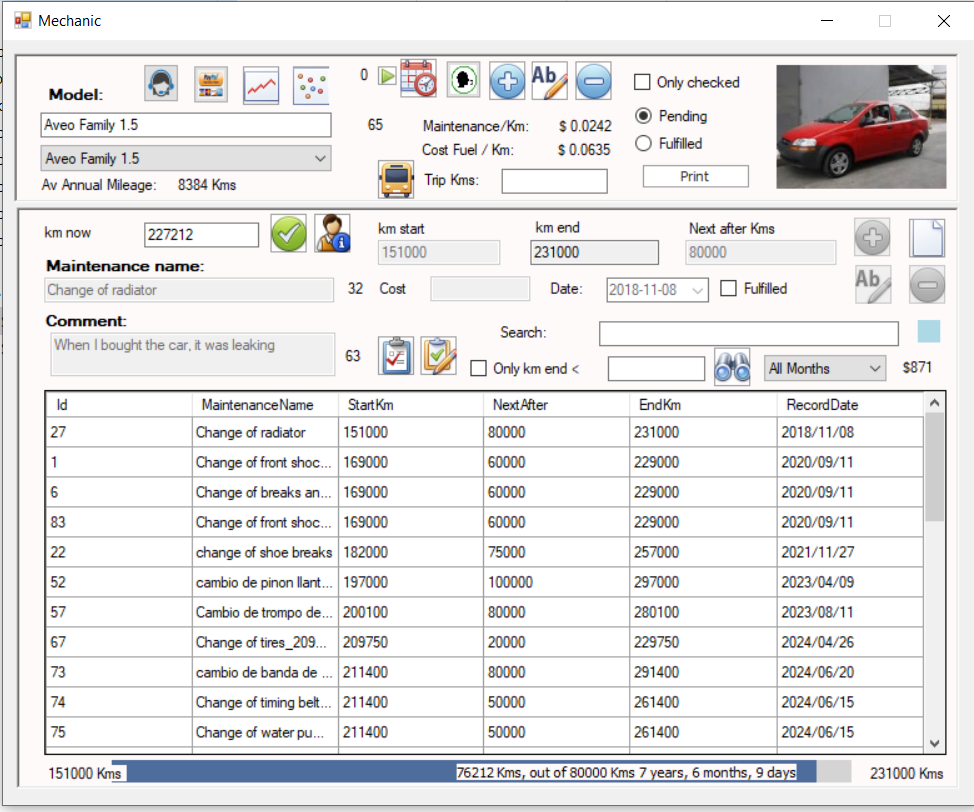
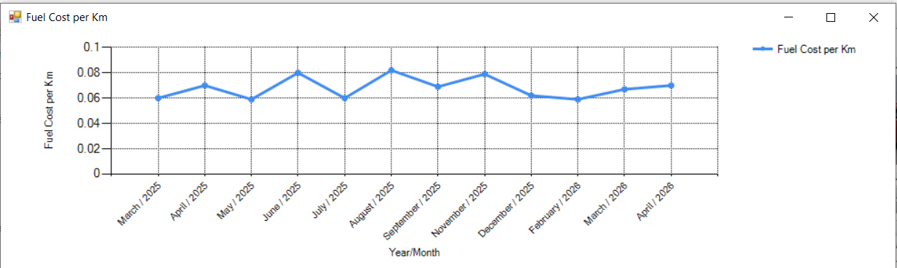
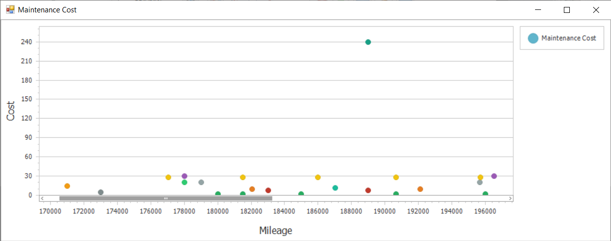
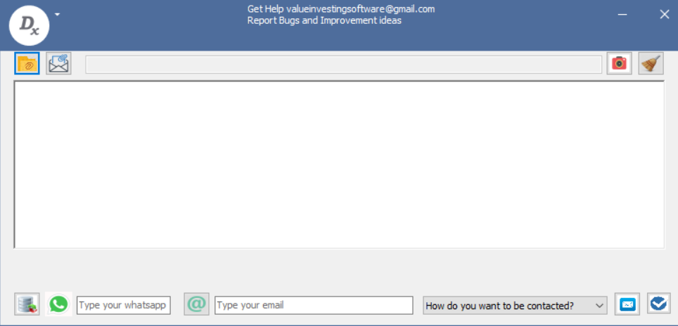
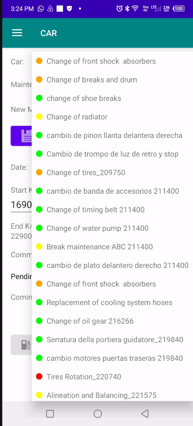
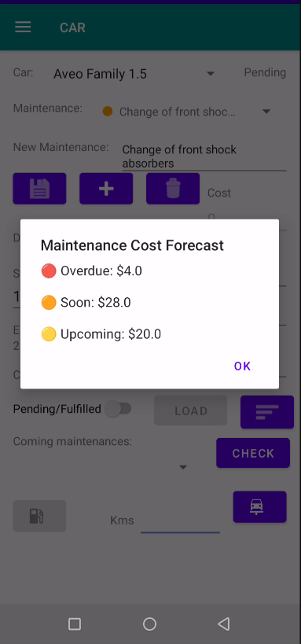

Dashboard di Gestione della Manutenzione dei Veicoli
Interfaccia principale desktop utilizzata per gestire programmi di manutenzione, cronologia degli interventi, monitoraggio delle riparazioni e storico completo della manutenzione del veicolo.

Analisi del Costo del Carburante per KM
Grafico analitico che mostra il costo del carburante per chilometro negli ultimi 12 mesi per una valutazione precisa dei costi operativi a lungo termine.

Analisi a Dispersione Costo di Manutenzione vs Chilometraggio
Grafico a dispersione che posiziona il costo della manutenzione sull’asse Y e il chilometraggio sull’asse X per visualizzare modelli di riparazione e comportamento della manutenzione.

Interfaccia di Richiesta Supporto Tecnico
Finestra di supporto integrata che consente agli utenti di richiedere assistenza tecnica, segnalare problemi e ricevere aiuto diretto.

Interfaccia di Sincronizzazione Mobile
Finestra di sincronizzazione utilizzata per collegare in modo sicuro l’app mobile al software desktop per il trasferimento dei dati di manutenzione in tempo reale.

Modulo Mobile di Gestione della Manutenzione
Interfaccia dell’app mobile per gestire le attività di manutenzione da remoto mantenendo una sincronizzazione centralizzata con il software desktop.

Livelli di Urgenza della Manutenzione del Veicolo
Spinner intelligente che visualizza le attività di manutenzione utilizzando indicatori di urgenza con codifica a colori: rosso per critico, arancione per interventi imminenti e giallo per pianificazione futura.

Costi di Manutenzione Raggruppati per Livello di Urgenza
Visualizzazione delle spese di manutenzione raggruppate per livello di urgenza per aiutare a dare priorità al budget e alla pianificazione degli interventi.
